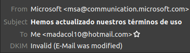

How to verify email DKIM
signatures
Keep in mind that some providers change the original source and the
email you receive becomes impossible to verify without guessing how to
undo the changes they made.
Hotmail, outlook, among others, are known to do this, source
The
simple method (you need credentials to access the account)
Donwload and install thunderbird
Connect you email account with it
Install the Add-on Dkim
verifier
Done!, you’ll see the validation on each email
Valid example

Look the last line ↑
Invalid example

This happens on almost all emails I receive in hotmail =(
The manual
method (you only need the email’s source)
- Download email, usually an
.eml file
- Make sure you have
python installed
pip install dkimpydkimverify < email_file.eml
Alternatively you can
dkimverify- paste email’s source
- Ctrl+D
If it succeeds, it returns signature ok
otherwise signature verification failed
Massively verify an mbox
archive
https://github.com/associatedpress/verify-dkim
Caveat
If the sender’s provider’s DKIM-private-key is leaked or made public,
then anyone in possession of it could make a valid signature of any
email, so the verification result becomes meaningless.
A way to avoid this and preserve its provability, is to timestamp the
.eml file with a service like https://opentimestamps.org/.
But it MUST be stamped before the private-key went
public, so you can prove the email’s signature existed before it became
forgeable